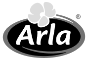

Últimos en salir.
Coordinamos cada etapa del traslado —permisos, ruta, izaje y entrega— para que el cronograma de tu obra o tu campaña no dependa de terceros.
Solicitar cotizaciónMarcas que confían en nosotros

Cinco servicios. Un solo responsable.
Operamos flota, grúas y autoelevadores propios. Eso significa un único interlocutor desde la cotización hasta que el equipo queda en posición.
Transporte de maquinaria agrícola
Cosechadoras, tractores, pulverizadoras y sembradoras trasladadas de campo a campo o entre provincias.
- Carretones y semis porta-equipos
- Permisos de circulación y escolta
- Coordinación con ventanas de cosecha
Transporte de maquinaria pesada
Excavadoras, palas cargadoras, motoniveladoras y equipos fuera de gálibo hasta obra.
- Cargas especiales e indivisibles
- Estudio de ruta y gálibos
- Seguro de carga sobre valor declarado
Montajes industriales
Armado, traslado interno y puesta en posición de líneas, silos, tanques y estructuras.
- Personal propio matriculado
- Plan de izaje y memoria de cálculo
- Trabajo en planta con producción activa
Servicio de grúa
Izajes de precisión con grúas hidráulicas para obra civil, industria y montaje de estructuras.
- Grúas de 20 a 100 toneladas
- Operadores habilitados
- Disponibilidad para urgencias
Servicio de autoelevador
Movimiento de cargas dentro de planta, depósito y playa: pallets, bobinas y equipos.
- Capacidad de 2,5 a 16 toneladas
- Alquiler por jornada o por mes
- Con operador incluido
Donde esté el equipo, llegamos.
Operamos en todo el país con base propia y una red de apoyo en ruta. Gestionamos permisos, escoltas y seguros para que el traslado avance sin detenerse.
Nada se improvisa.
Cada operación tiene un responsable asignado y un plan escrito antes de que el equipo salga del predio.
Gente que conoce el equipo.
Rosso Maquinarias es una empresa familiar de Río Cuarto que empezó moviendo maquinaria agrícola para productores de la zona. Hoy operamos flota, grúas y autoelevadores propios en todo el país, con el mismo criterio: el equipo del cliente se trata como si fuera nuestro.
Nos vuelven a llamar.
"Coordinaron el traslado de dos cosechadoras en plena campaña y llegaron el día que dijeron. Eso, en cosecha, vale todo."
"Trabajaron dentro de la planta con la línea andando. Plan de izaje, gente con matrícula y cero paradas no previstas."
"Los llamamos para una urgencia un sábado y tuvimos grúa en obra en cuatro horas. Desde ahí no cambiamos más de proveedor."
Contanos qué hay que mover.
Respondemos en el día con una propuesta concreta: equipo asignado, fecha posible y precio cerrado.